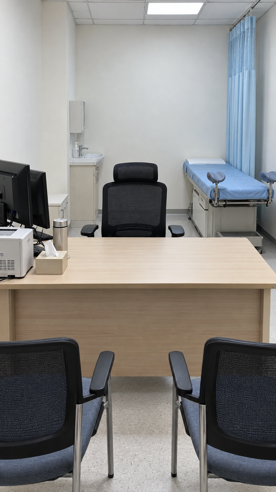
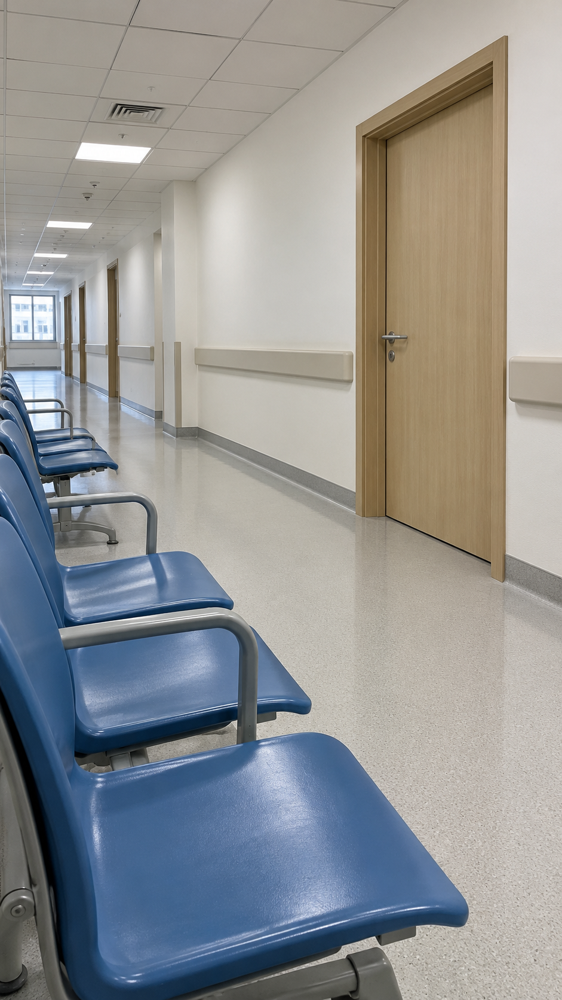

先听她说·第八版·空间设计v1
开场站位
和文件一致
✓ 质量门 8/8
01
各场开场站位
第 1 集第 1 场诊室
工作日日间，柔和顶灯3 人

洗手池蓝色检查床浅蓝隐私帘医生座椅木质办公桌为什么这么排三人开场都已就座。医生北侧，林悦南侧偏西、丈夫南侧偏东；先向医生说话，夫妻交谈时只转头，不换座。北侧医生点位与现有座椅中心相邻；患者座椅由办公桌南侧位置代表。
第 1 集第 2 场走廊
稍后，走廊原有顶灯2 人

远端窗蓝色候诊椅远处诊室门近处诊室门门外通道为什么这么排二人开场已在诊室外，身体朝通道深处、侧头相望；内侧手是她右手和他左手。林悦第一个通道点位居中，丈夫在其东侧，按上游同一地面上的并排规则绘制。医生留诊室，不属于本场出场人物。
02
地点与认出来的东西
洗手池蓝色检查床浅蓝隐私帘医生座椅木质办公桌
| 东西 | 另一种语言 | 能坐能站 | 圆的 |
|---|
| 洗手池 | wash basin | | |
| 蓝色检查床 | blue examination bed | ✓ | |
| 浅蓝隐私帘 | pale blue privacy curtain | | |
| 医生座椅 | doctor chair | ✓ | |
| 木质办公桌 | wooden desk | | |
远端窗蓝色候诊椅远处诊室门近处诊室门门外通道
| 东西 | 另一种语言 | 能坐能站 | 圆的 |
|---|
| 远端窗 | window at far end | | |
| 蓝色候诊椅 | blue waiting bench | ✓ | |
| 远处诊室门 | far consultation door | | |
| 近处诊室门 | near consultation door | | |
| 门外通道 | floor outside consultation room | ✓ | |
03
质量门
- ✓每个地点都认了图，4–20 件东西
- ✓东西的名字不重复，平面位置和图上位置都是合法的框
- ✓每一场的地点都有认图结果
- ✓每一场的出场人物正好各一条本项目已另行提供 script.json 与 art.json 校验通过；修改后请重新校验
- ✓每个人都定了开场在不在，至少一个人在场
- ✓在场的人落在认出来的东西上，方位、坐站、朝向合法
- ✓同一侧的人不叠在一处
- ✓群演人数是整数，有群演写明在哪
质量门全部通过 · 这是 render 那一刻的结果；页面上改过以后，以导出后再跑 validate 为准。每场卡片右下角是改动后实时重算的检查。